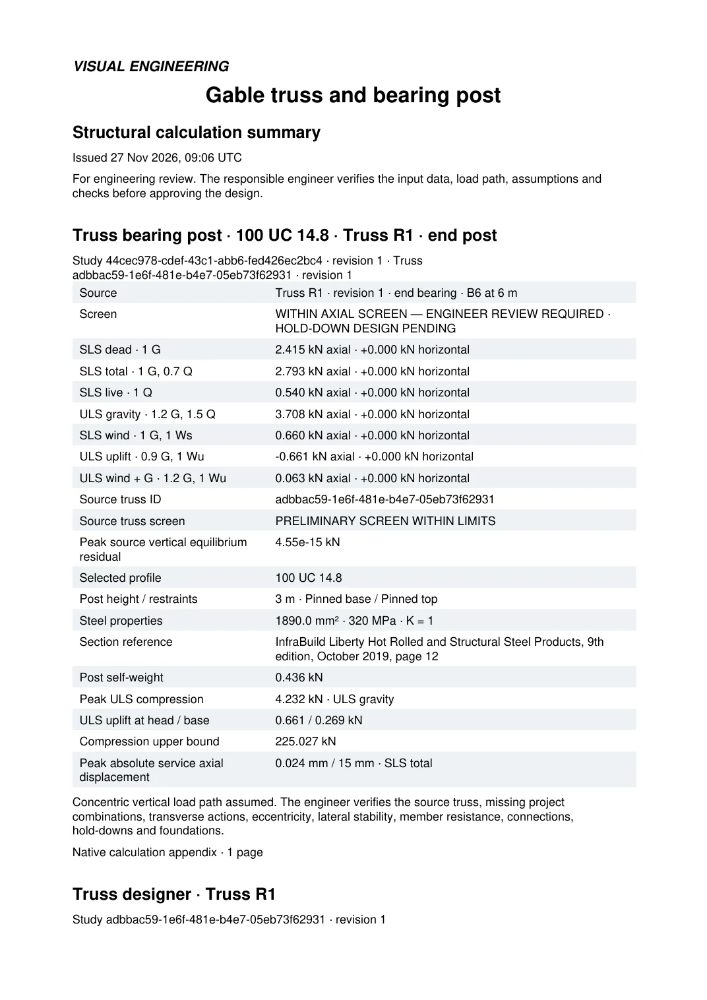

Gable truss and right-hand bearing post
A 6 m gable truss with SHS chords and webs bears on a 3 m steel post. Follow the right-hand reaction into the post under gravity and wind. The same combination supplies both the vertical and horizontal actions.
The uplift case puts the post head in tension. The axial calculation includes the post’s own weight. Bearing connections, hold-downs and lateral stability require engineering review.
Loading the report…
